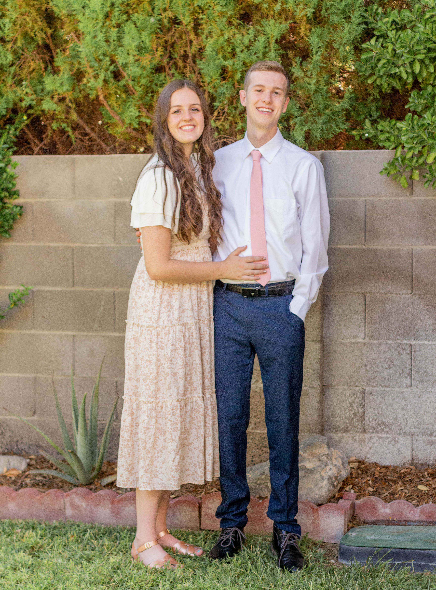
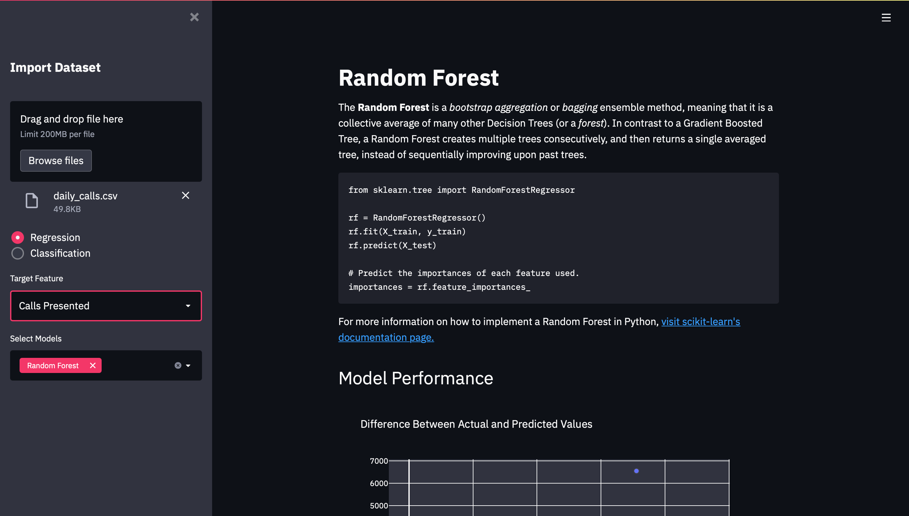

A student at heart.
This is a subheader that will describe information
about myself in a half paragraph sentence that looks
something like this.
Content
About Me
I am a student at heart with an endless desire to learn. I have had the opportunity over the past few years to develop sound skills in data visualization and analysis using Python, SQL, Power BI, and other analysis tools. I’m deeply driven towards improvement, and have a passion for helping others succeed. I’ve experience in data wrangling and visualization using Python and SQL, with further experience developing web applications and deploying ML models on the front end. I am a self educator, a top performing student, and possess strong organizational and problem-solving skills rooted in a background of computer science and statistics. I began my studies as a computer engineer, and eventually fell in love with the world of data analytics. I have since studied a multitude in online courses and certificates, while continueing to progress towards a degree in computer science, emphasizing in statistics.
History
I was born and raised in Las Vegas, Nevada. I spent two years in volunteer service in Tampico, Mexico, and later was given the opportunity of a full ride scholarship to study at Brigham Young University - Idaho. There, I began work as a backend developer and analyst for the school's business support center. There, over the course of five months, I worked in developing a forecasting tool that would eventually serve to reduce hiring error by 78%, effectively helping the school to improve their service towards the students and more correctly appropriate their budget. There I was also given the chance to rework the pipeline used to hire new representatives. I was able to create a new job application form that interfaced with the school's website to display applications, applicants in the hiring process, previous hires, and hiring requests made by other departments. This effectively increased the productivity of the human resources department and put many of the resources they used into a single location. I later joined the universitys society of Data Science in 2021 where I became the project manager over a team of students to help International Realty develop a web scraping dashboard that would serve as a hub to store PDFs of their listings.
Additional Project Information
Certificates: Python for Data Science and Machine Learning Bootcamp Python for Time Series Data Analysis The Complete SQL Bootcamp 2021: Go from Zero to Hero Time Series Regression Analysis for Call Center Forecasting: Created an online dashboard to help workforce management predict the number of representatives needed throughout each semester. Reduced semesterly forecast MAPE by 78% and weekly forecast MAPE by 90%. The project revolved around wrangling data from previously created TeamDynamix tickets into Python, training and testing an ML model, and presenting the data as a user friendly web application. Web Scraping Dashboard for Online Image Collection Machine Learning Playground for an Introduction to Supervised Learning Automated Data Collection and Entry Process for Member Information
Images
Homepage
This will house my profile picture, and potentially my youtube channel.
About
This section will most likely contain images of my wife and I, with my background. 
Portfolio
The portfolio section will contain GIFs of my past projects that will display on hover. These projects will be simple screenshots laid out in a grid.
Contact
This page will be for contact information (and also potentially an email form) only.